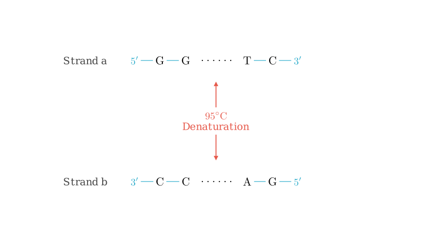
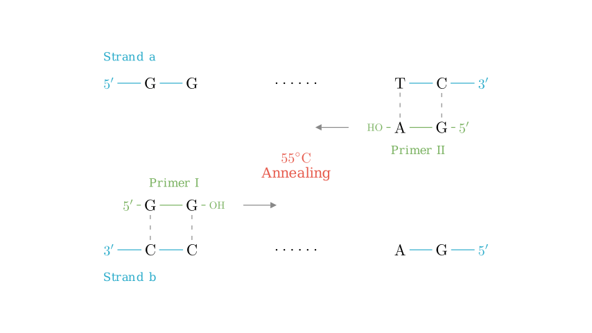
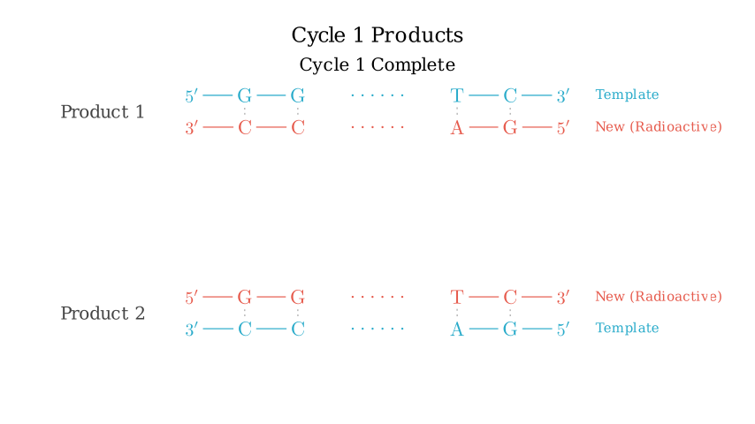
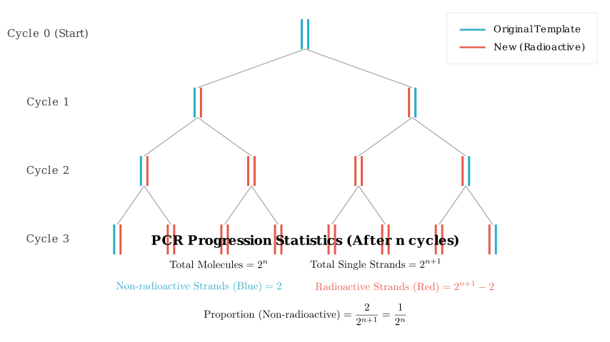

Problem Statement
In genetic disease analysis and criminal investigations, it is often necessary to analyze sample DNA. PCR (Polymerase Chain Reaction) technology can rapidly amplify DNA fragments, replicating millions of DNA copies within a few hours. This effectively solves the problem of analyzing samples with very low DNA content. Based on the diagram provided, answer the following questions.
(1) Write the sequence for Primer II (引物 II) on the corresponding line and place Primer II in the appropriate position during the annealing (renaturation) step ($55^\circ$C). (2) Write the sequences of the DNA molecules generated after one cycle on the corresponding lines. (3) If the four types of deoxyribonucleotides used as raw materials are labeled with $^{32}$P, analyze the characteristics of the DNA molecules generated after one cycle: _____. After $n$ cycles, the proportion of single strands containing no radioactivity to the total number of single strands is _. (4) The prerequisite for the PCR reaction process is __. PCR technology utilizes the principle of DNA's __ to solve this problem. (5) During the analysis of sample DNA, it was found that the DNA is mixed with some histones. The substance that can be added to remove these histones is ______.
Solution Approach
To solve this, we need to understand the basic mechanism of PCR: 1. Denaturation ($95^\circ$C): DNA strands separate. 2. Annealing ($55^\circ$C): Primers bind to complementary sequences. Crucially, DNA polymerase works in the 5' to 3' direction, so primers must bind to the 3' end of the template strand. 3. Extension ($72^\circ$C): New strands are synthesized.
We will analyze the sequence complementarity to determine the primer, visualize the replication process to determine the products, and use the semi-conservative replication model to calculate the radioactive ratios.

Step 1: Identifying Primer II (Question 1)
PCR requires two primers. A primer must bind to the 3' end of the template strand to allow DNA polymerase to synthesize the new strand in the 5' $\to$ 3' direction.
Reading the primer in the standard 5' $\to$ 3' direction, the sequence is 5'-G-A-OH.

Step 2: Extension and Cycle 1 Products (Question 2)
During the extension phase ($72^\circ$C), Taq polymerase extends the primers by adding free nucleotides complementary to the template.
Therefore, the products written on the lines for Question 2 are simply the full double-stranded sequences: 1. $5'-G-G......T-C-3'$ 2. $3'-C-C......A-G-5'$

Step 3: Radioactive Labeling Analysis (Question 3)
If the raw materials (dNTPs) are labeled with $^{32}$P, every newly synthesized strand will be radioactive. The original template strands remain non-radioactive.
After Cycle 1: As shown in the diagram above, DNA replication is semi-conservative. Each of the 2 resulting DNA molecules consists of: 1. One original non-radioactive strand (Parent). 2. One newly synthesized radioactive strand (Daughter). Answer: Each DNA molecule contains one radioactive chain and one non-radioactive chain.
After $n$ Cycles: * Total DNA molecules = $2^n$ * Total single strands = $2 \times 2^n = 2^{n+1}$ * Original non-radioactive strands = 2 (The two strands we started with never disappear, they just act as templates). * All other strands are newly synthesized and therefore radioactive.
Calculation for the proportion of non-radioactive strands: $$ \frac{\text{Non-radioactive strands}}{\text{Total strands}} = \frac{2}{2^{n+1}} = \frac{1}{2^n} $$

Step 4: Principles and Purification (Questions 4 & 5)
(4) Prerequisites & Principle: * Prerequisite: To perform PCR, you must know the nucleotide sequence of at least the ends of the target DNA segment. This is necessary to synthesize the specific primers. * Principle: PCR is essentially in vitro DNA replication. It relies on the principle of DNA semi-conservative replication (specifically utilizing thermal denaturation and thermostable polymerase).
(5) Removing Histones: * Chromosomal DNA in cells is wrapped around proteins called histones. * To purify the DNA, we need to degrade these proteins. * Protease (specifically Protease K) is the enzyme used to break down proteins/histones without damaging the DNA.
Final Answer Summary
(1) Primer II: $5'-G-A-OH$ (or $5'-HO-A-G-3'$). Placement: It binds to the 3' end of the top strand (Strand a).
(2) Generated DNA: $5'-G-G......T-C-3'$ $3'-C-C......A-G-5'$
(3) Characteristics: Each DNA molecule consists of one labeled (radioactive) strand and one unlabeled (non-radioactive) strand. Proportion: $1/2^n$
(4) Prerequisite: The nucleotide sequence of the target gene (to synthesize primers). Principle: DNA Replication (Semi-conservative replication).
(5) Protease (or Protease K).